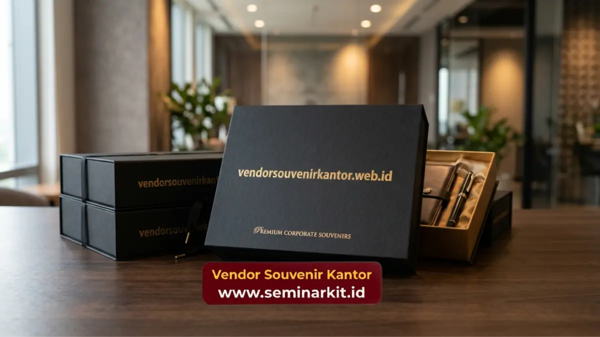

Souvenir untuk klien adalah cinderamata korporat bermerek yang diberikan perusahaan kepada mitra bisnis, pelanggan, atau relasi sebagai bentuk apresiasi dan strategi menjaga loyalitas jangka panjang. Souvenir ini biasanya dicetak custom logo perusahaan.
Vendor Souvenir Kantor menyediakan pilihan lengkap dengan kualitas premium dan proses pemesanan yang cepat.
- Souvenir untuk klien berfungsi sebagai alat branding sekaligus bentuk apresiasi bisnis yang mempererat hubungan jangka panjang.
- Waktu paling efektif memberikan souvenir adalah saat meeting pertama, penandatanganan kontrak, akhir tahun, dan hari raya.
- Jenis souvenir yang populer meliputi alat tulis premium, drinkware custom logo, hampers, dan produk elektronik ringan.
- Pemilihan souvenir yang tepat mempertimbangkan relevansi, kualitas, dan konsistensi identitas merek perusahaan.
- Vendor Souvenir Kantor melayani produksi custom logo dengan kualitas premium dan pengerjaan tepat waktu untuk kebutuhan korporat.
Apa Itu Souvenir untuk Klien dan Mengapa Penting bagi Bisnis?
Souvenir untuk klien adalah benda bernilai fungsional atau estetika yang diberikan sebagai representasi identitas dan penghargaan perusahaan kepada mitra bisnisnya.
Pemberian souvenir bukan sekadar formalitas, melainkan investasi hubungan jangka panjang.
Dalam dunia bisnis B2B, kepercayaan dan kedekatan personal sering menjadi faktor penentu keputusan lanjutan sebuah kerja sama.
Souvenir korporat yang tepat menjadi pengingat visual yang terus hadir di meja kerja klien, sehingga nama perusahaan tetap diingat setiap hari.
Kapan Waktu Tepat Memberikan Souvenir untuk Klien?
Momen pemberian souvenir sangat memengaruhi kesan yang diterima klien, sehingga perlu dipilih secara strategis agar pesan apresiasi tersampaikan maksimal.
Beberapa momen yang umum digunakan perusahaan untuk memberikan souvenir kepada klien meliputi:
- Pertemuan bisnis pertama sebagai bentuk kesan awal yang profesional
- Penandatanganan kontrak atau kerja sama baru
- Perayaan akhir tahun sebagai ucapan terima kasih atas kerja sama sepanjang tahun
- Hari raya keagamaan atau momen nasional tertentu
- Kunjungan resmi klien ke kantor perusahaan
- Ulang tahun perusahaan klien atau anniversary kerja sama
Memberikan souvenir pada momen yang relevan membuat penerima merasa dihargai secara personal, bukan sekadar rutinitas seremonial.
Apa Saja Jenis Souvenir untuk Klien yang Paling Diminati?
Jenis souvenir untuk klien yang paling diminati saat ini adalah produk fungsional bernilai guna tinggi seperti alat tulis premium, drinkware custom logo, dan produk elektronik ringan yang dipakai setiap hari.
Beberapa kategori populer antara lain:
Alat tulis premium. Pulpen metal, notebook kulit sintetis, dan set alat tulis eksekutif memberikan kesan formal dan sering digunakan di meja kerja klien.
Drinkware custom logo. Tumbler, mug keramik, dan botol minum stainless steel dengan cetak logo menjadi pilihan favorit karena dipakai berulang kali.
Produk elektronik ringan. Power bank, flashdisk custom, dan speaker portable menawarkan nilai fungsional tinggi sekaligus kesan modern.
Hampers dan gift set. Kombinasi produk dalam kemasan eksklusif cocok untuk momen hari raya atau akhir tahun.
Produk ramah lingkungan. Tas kanvas, tumbler bambu, dan totebag reusable semakin diminati karena mencerminkan kepedulian perusahaan terhadap keberlanjutan.

Bagaimana Cara Memilih Souvenir untuk Klien yang Tepat?
Memilih souvenir untuk klien yang tepat dimulai dengan memahami profil penerima, menyesuaikan anggaran, dan memastikan kualitas produk mencerminkan citra perusahaan secara konsisten.
Beberapa faktor yang perlu dipertimbangkan:
- Relevansi dengan profil klien. Sesuaikan jenis souvenir dengan posisi jabatan dan industri klien, misalnya produk eksekutif untuk level direksi.
- Kualitas material. Barang berkualitas rendah dapat menurunkan citra perusahaan, sehingga pemilihan bahan premium sangat disarankan.
- Konsistensi branding. Warna, logo, dan desain kemasan sebaiknya selaras dengan identitas visual perusahaan.
- Kepraktisan pengiriman. Untuk klien di luar kota, pertimbangkan produk yang ringkas dan aman saat dikirim.
- Waktu produksi. Pastikan vendor memiliki kapasitas produksi yang sesuai tenggat acara.
Berapa Kisaran Biaya Souvenir untuk Klien Korporat?
Biaya souvenir untuk klien korporat umumnya bervariasi tergantung jenis produk, bahan, jumlah pemesanan, dan kompleksitas custom logo yang diinginkan.
Secara umum, anggaran souvenir dapat dibagi menjadi tiga kategori:
- Kategori ekonomis, cocok untuk pemberian dalam jumlah besar seperti acara seminar atau gathering.
- Kategori menengah, ideal untuk klien reguler dengan kualitas produk yang lebih tahan lama.
- Kategori premium, digunakan untuk klien strategis atau momen khusus seperti penandatanganan kontrak besar.
Harga dapat bervariasi tergantung jumlah pesanan, sehingga sebaiknya konsultasikan kebutuhan spesifik dengan tim vendor untuk mendapatkan penawaran yang sesuai anggaran perusahaan.
Apa Saja Kesalahan Umum saat Memilih Souvenir untuk Klien?
Kesalahan paling umum dalam memilih souvenir untuk klien adalah mengutamakan harga murah tanpa mempertimbangkan kualitas, sehingga produk justru menurunkan citra perusahaan di mata klien.
Kesalahan lain yang sering terjadi:
- Memilih desain generik tanpa sentuhan identitas merek perusahaan
- Tidak memperhitungkan waktu produksi sehingga souvenir terlambat pada hari acara
- Mengabaikan preferensi atau kebutuhan fungsional penerima
- Memilih kemasan seadanya yang mengurangi kesan eksklusif
- Tidak melakukan pengecekan sampel sebelum produksi massal
Menghindari kesalahan ini membantu memastikan souvenir benar-benar berdampak positif terhadap hubungan bisnis jangka panjang.
Mengapa Memesan Souvenir untuk Klien di Vendor Souvenir Kantor?
Vendor Souvenir Kantor hadir sebagai solusi souvenir korporat dengan kualitas premium, proses custom logo yang presisi.
Serta layanan konsultasi yang membantu perusahaan menentukan produk paling relevan dengan kebutuhan klien.
Beberapa keunggulan layanan meliputi pilihan produk yang lengkap mulai dari alat tulis hingga hampers eksklusif, proses produksi yang memperhatikan detail kualitas.
Serta kemudahan konsultasi kebutuhan sebelum pemesanan dalam jumlah besar. Tim akan membantu menyesuaikan konsep souvenir dengan identitas merek perusahaan Anda.
Jika perusahaan Anda sedang mempersiapkan souvenir untuk klien pada momen bisnis mendatang, kunjungi vendorsouvenirkantor.web.id untuk berkonsultasi langsung dan mendapatkan penawaran custom logo terbaik.
Souvenir untuk klien merupakan investasi strategis yang memperkuat kepercayaan dan mengingatkan klien pada perusahaan Anda secara berkelanjutan. Pemilihan jenis produk, kualitas material, serta ketepatan momen pemberian menjadi kunci keberhasilan strategi ini.
Untuk mendapatkan souvenir untuk klien dengan kualitas premium dan proses custom logo yang rapi, konsultasikan kebutuhan perusahaan Anda bersama vendorsouvenirkantor.web.id sekarang juga.

Banner promosi: klik gambar untuk langsung terhubung ke WhatsApp tim sales.